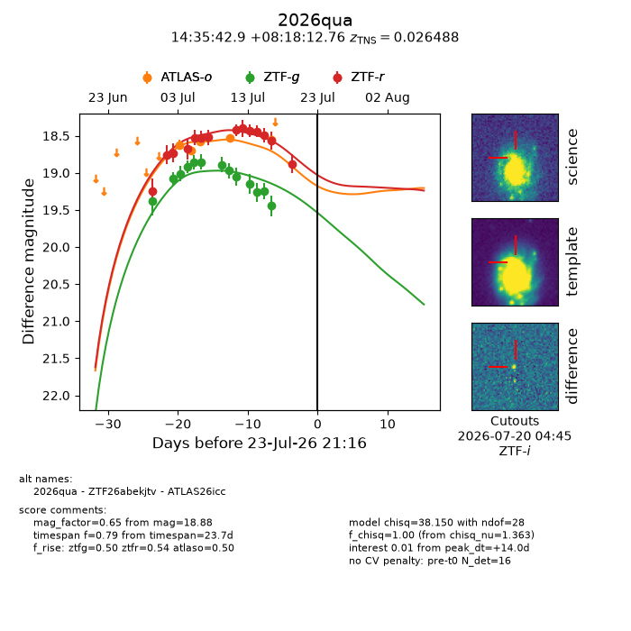
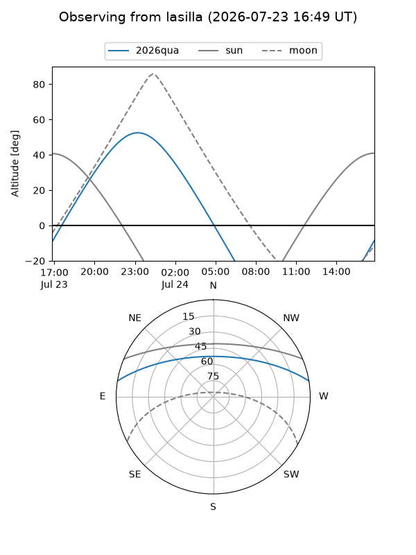
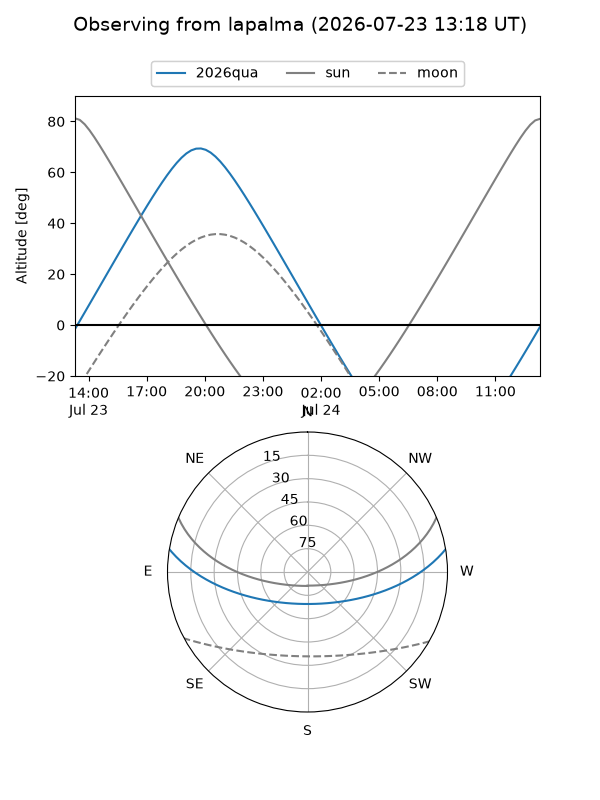
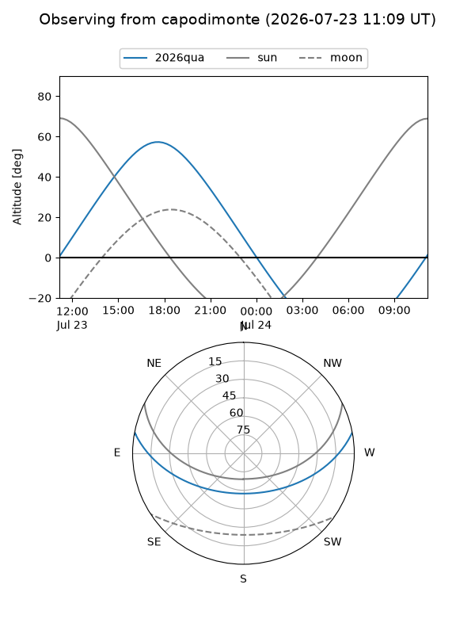
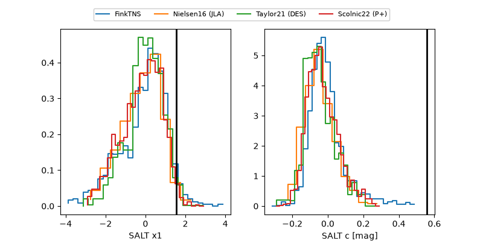

2026qua
Target 2026qua at 2026-07-23 21:19
Aliases and brokers:
FINK-ZTF: ztf.fink-portal.org/ZTF26abekjtv
Lasair-ZTF: lasair-ztf.lsst.ac.uk/objects/ZTF26abekjtv
ALeRCE-ZTF: alerce.online/object/ZTF26abekjtv
YSE-PZ: ziggy.ucolick.org/yse/transient_detail/2026qua
TNS name: wis-tns.org/object/2026qua
Direct TNS query: direct search
alt names
ZTF26abekjtv (ztf,fink_ztf)
2026qua (tns,yse)
ATLAS26icc (atlas)
Coordinates:
equatorial (ra, dec) = 218.9289,+8.30354
equatorial (HMS+DMS) = 14:35:42.94,+08:18:12.76
galactic (l, b) = (0.4566,+58.97181)
Flags:
TNS type: SN Ib
TNS redshift: 0.0265
peak dt: +14.0
Photometry:
last atlaso=18.55, ztfg=19.45, ztfr=18.88
5 atlaso, 13 ztfg, 14 ztfr detections
Lightcurve

Visibility



Additional plots
